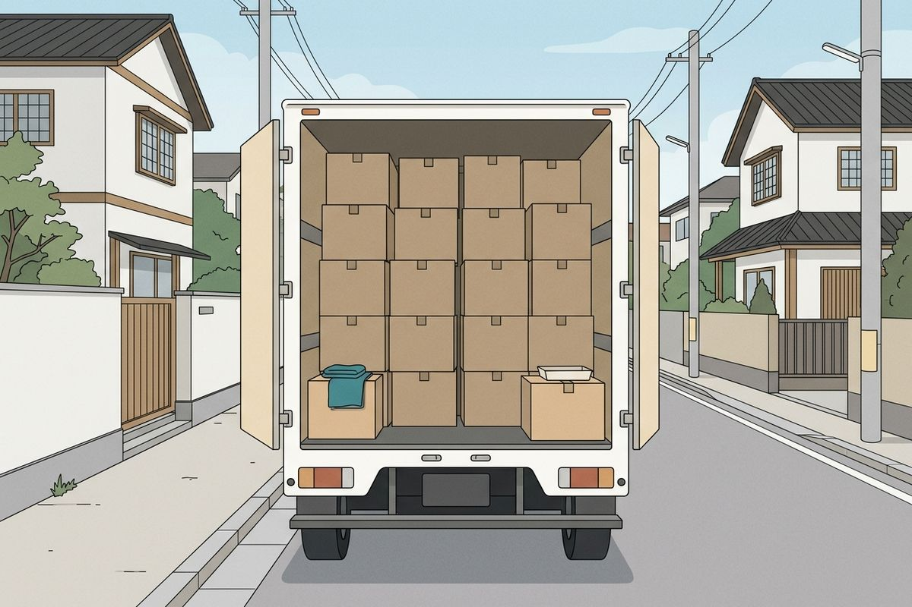

荷物の量から、引っ越しトラックの大きさを出す
持っていく家具・家電と段ボールの数を選ぶと、荷物の体積を合計して、日本通運が公開しているトラックの積載の目安と比べて、寸法上の候補を出します。費用は会社・時期・距離で変わるので、ここでは出しません。

イメージ図（AI生成。実物・実測ではありません）- 1何人で住むか
- 2段ボールの数
- 3持っていく家具・家電
- 4トラックの候補を見る
入力
人数と段ボールの数、持っていく家具・家電を選ぶと、下にトラックの候補が出ます。
1何人で住んでいますか
2段ボールの数
入力
3持っていく家具・家電
寸法は、家電は商品データの中央値、家具はYahoo!ショッピングの出品の中央値、段ボール・布団袋は引越し会社の公式の値です。よく使う品目を先に出しています。ほかの品目は「すべての品目を見る」、自分の家具は「寸法を入れて追加」で足せます。
すべての品目を見る
寸法を入れて追加
結果
例：一人暮らしのよくある荷物上の入力を変えると自動で出し直します
この荷物なら、2トン車が候補です。
トラックの候補2トン車
根拠 推定 約4.5㎥は、積載の目安（約5〜10㎥）の上限の約46%。図は割合を示す概念図で、実際の積み方ではありません。
外形の合計 約4㎥（家具・家電＋段ボールM 15箱）× 積み方の余裕1.2 ＝ 推定 約4.5㎥
区分ごとの積載の目安と、今の荷物（約4.5㎥）
前提：荷台の大きさは積める量そのものではなく、実際の車は引越し会社が荷物を見て決めます。2トン車の目安より少なめで、軽トラックで足りる場合もあります。（詳しく）
計算のしかた
品目ごとの外形（幅×奥行×高さ）の体積を足し、積み方のすき間や形の悪い家具の分として1.2倍しています。この1.2倍はこのサイトの仮定で、公開されたデータはありません。
トラックの区分と積載の目安は、日本通運の公開している表（2トン車 約5〜10㎥、2トンロング車 約10〜15㎥、4トンロング車 約20〜25㎥、10トン車 約40〜45㎥）です。日本通運は「荷台サイズは積める荷物量そのものではなく、家具の形状や梱包状態によって実際の積載量は変動する」としています。境目に近いとき（上限の前後15%）は、大きいほうの区分も並べて出します。15%は言い切らないための便宜的な幅です。体積は細かい数字を出さず、5㎥未満は0.5㎥刻み、それ以上は1㎥刻みに丸めて示します。くわしくはデータと判定の決め方へ。